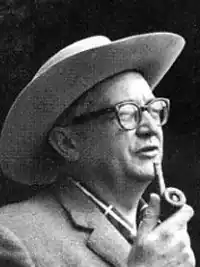

Справжнє ім'я Франсуа Борд. Французький письменник, вчений, геолог і археолог.
Народився 30 грудня 1919, Рив, Нова Аквітанія, Франція.
Франсуа Борд навчався в Тулузькому університеті. Однак навчання довелося перервати через початок Другої світової війни. Він вступив до лав Французького Опору, діяв у Тулузі й Бельв'ю, брав участь у визволенні Бордо. Після Другої світової війни став професором стародавньої історії й четвертинної геології в Наукового факультету Бордо. Паралельно з викладанням займався письменницькою діяльністю. Він дуже поновив підхід до доісторичних кам'яних промисловостей, представляючи статистичні дослідження в типології та розширенні використання експериментального кременю. Він також опублікував багато науково-фантастичних романів під псевдонімом. Його книги не перекладались на англійську мову. З іншого боку, в СРСР фантаст Карсак був дуже популярним. Його твори було перекладено й видано російською, румунською, болгарською, литовською, латиською, угорською, естонською та іншими мовами. Наприкінці 1960-х років писати практично перестав. Помер 1981 року в м. Тусон (Аризона, США), де провів останній період свого життя. В СРСР його книги мали особливо велику популярність. Твори автора досі майже не перекладено українською, окрім оповідання "Гори долі" в перекладі Григорія Миколайовича Філіпчука, виданого у збірнику "Колиска на орбіті" серії "Пригоди. Фантастика" видавництва "Веселка" у 1983 році під редакцією Михайла Слабошпицького. Наукова фантастика: 1944 рік — "У вільному світі" (Sur un monde stérile) — не видано 1953 рік — "Прибульці нізвідки" (Ceux de nulle part) 1962 рік — "Цей світ — наш" (Ce Monde est nôtre) 1962 рік — "Космос — наш дім" (Pour patrie l'espace) 1955 рік — "Робінзони космосу" (Les robinsons du cosmos) 1960 рік — "Втеча Землі" (Terre en fuite) 1967 рік — "Леви Ельдорадо" (La vermine du lion) Повісті та оповідання: 1954 рік — "Таємниці, вкриті мороком" (Taches de rouille) 1959 рік — "Яка вдача для антрополога" (Quelle aubaine pour un anthropologue) 1961 рік — "Вікно у минуле" (Une fenêtre sur le passé) 1972 рік — "Бог, що приходить з вітром" (Le dieu qui vient avec le vent) 1975 рік — "Так нудьгують в Утопії" (Tant on s'ennuie en Utopie) 1982 рік — "Той, кому прийшла Велика вода" (Celui qui vint de la grande eau) 1954 рік — "Штрихи" (Hachures) 1958 рік — "Genèse" 1958 рік — "Людина, яка говорила з марсіанами" (L'homme qui parlait aux martiens) 1959 рік — "Мертві піски" (Sables morts) 1959 рік — "Реванш марсіан" (La revanche des martiens) — у співавт. з Жаком Берж'є (Jacques Bergier) 1959 рік — "Поцілунок життя" (Le baiser de la vie) 1959 рік — "Бідні люди" (Les pauvres gens) — під іменем Жорж Карсак (Georges Carsac) 1960 рік — "Перша імперія" (Premier empire) 1960 рік — "Голос вовка" (La voix du loup) 1962 рік — "Пращур" (L'Ancêtre) 1966 рік — "Гори Долі" (Les monts de destin) 1971 рік — "У горах долі" (Dans les montagnes du destin) 1978 рік — "Людина, яка буде богом" (L'homme qui voulut être dieu) 1981 рік — "Власні руки" (Les mains propres)